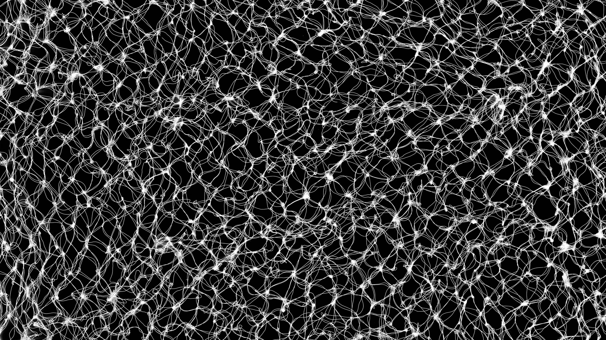
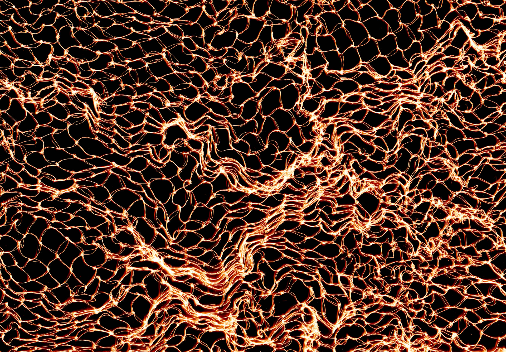
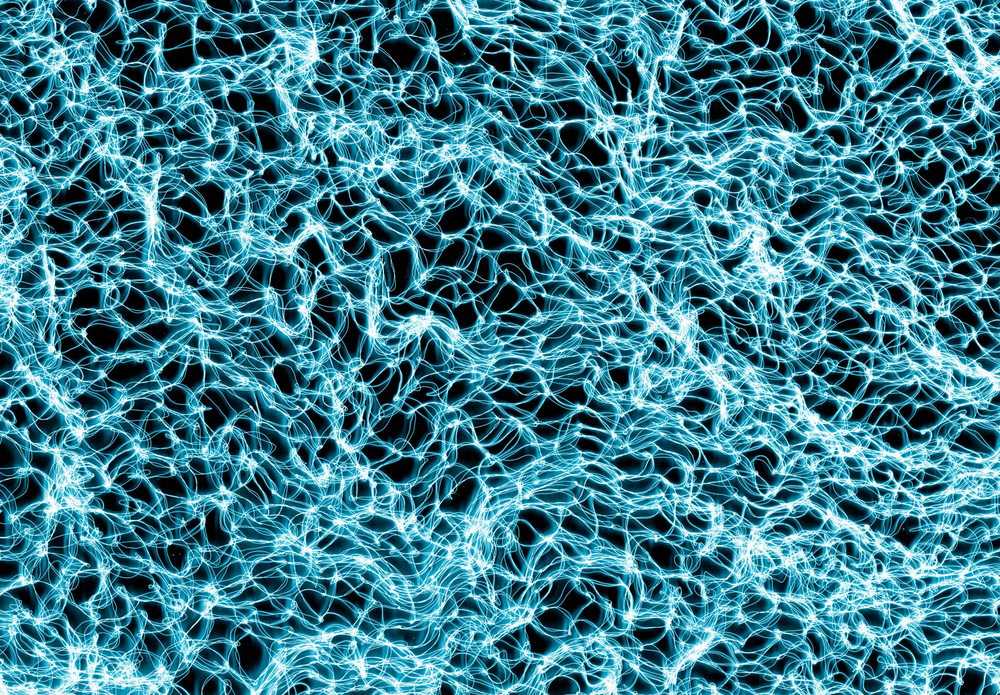
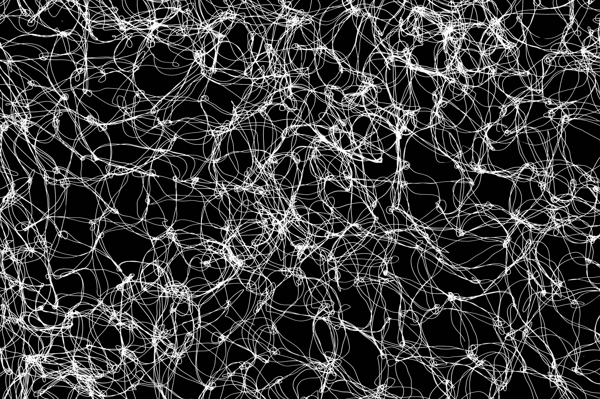
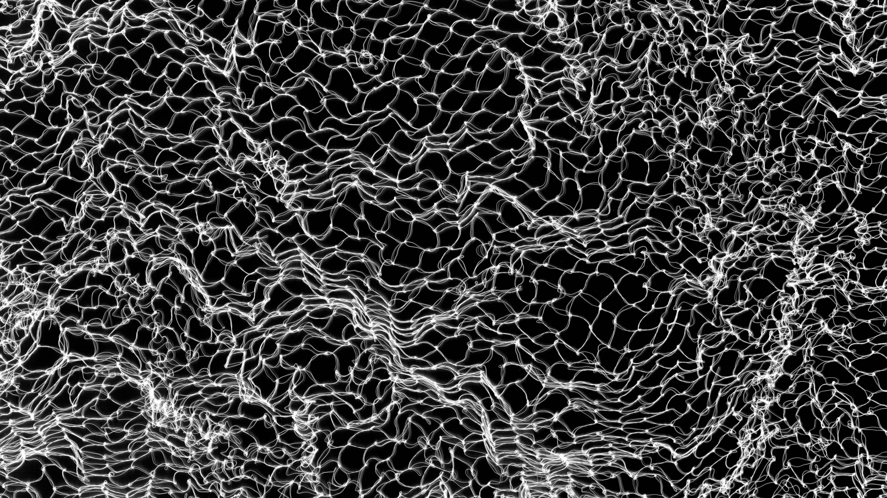
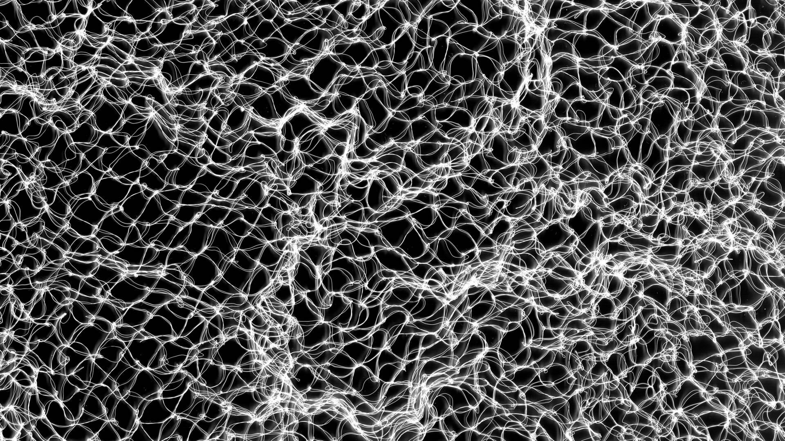

Gossamer
Darkroom v Lightroom Photograms, 2004-2014
Gossamer was started in 2004 while I was studying at Parsons School of Design.
Misunderstanding the assignment, I showed up to class, held that day in the darkroom, unprepared. The request was that we bring something — that wasn't a negative — to put in the enlargers. What I happened to have in my bag was a hairnet that was used as a sort of bag for another project. Cramming that into the enlarger produced photograms very similar to what's below.
Not having access to an enlarger now, the current approach involves putting hairnets in my flatbed scanner.




